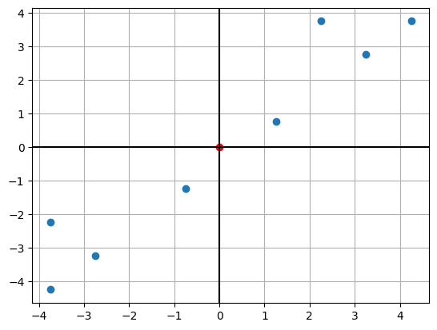
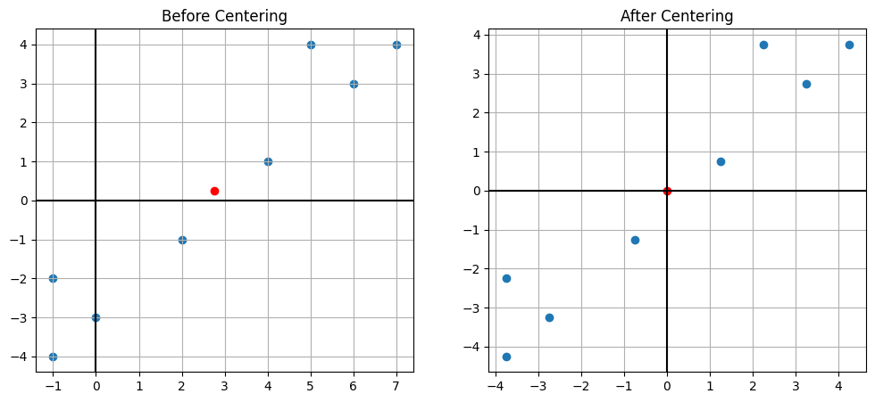
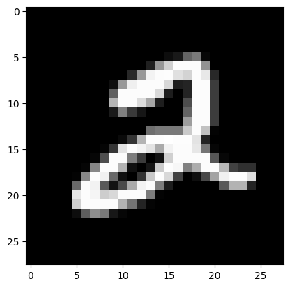
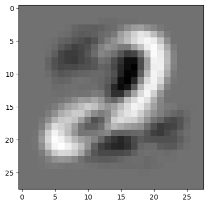

import numpy as np
import matplotlib.pyplot as pltWeek 1: Standard PCA
Colab Link: Click here!
Steps involved in PCA
Step 1: Center the dataset
Step 2: Calculate the covariance matrix of the centered data
Step 3: Compute the eigenvectors and eigenvalues
Step 4: Sort the eigenvalues in descending order and choose the top k eigenvectors corresponding to the highest eigenvalues
Step 5: Transform the original data by multiplying it with the selected eigenvectors(PCs) to obtain a lower-dimensional representation.
Observe the dataset
Let’s take a dataset \displaystyle \mathbf{X} of shape (d,n) where
d: no. of features
n: no. of datapoints
X = np.array([(4,1),(5,4),(6,3),(7,4),(2,-1),(-1,-2),(0,-3),(-1,-4)]).Tplt.scatter(X[0,:],X[1,:])
plt.axhline(0,color='k')
plt.axvline(0,color='k')
x_mean = X.mean(axis=1)
plt.scatter(x_mean[0],x_mean[1],color='r')
plt.grid()
plt.show()
Center the dataset
def center(X):
return X - X.mean(axis = 1).reshape(2,1)
d, n = X.shape
X_centered = center(X)X_centeredarray([[ 1.25, 2.25, 3.25, 4.25, -0.75, -3.75, -2.75, -3.75],
[ 0.75, 3.75, 2.75, 3.75, -1.25, -2.25, -3.25, -4.25]])import matplotlib.pyplot as plt
plt.scatter(X_centered[0,:],X_centered[1,:])
plt.axhline(0,color='k')
plt.axvline(0,color='k')
c_mean = X_centered.mean(axis=1)
plt.scatter(c_mean[0],c_mean[1],color='r')
plt.grid()
plt.show()
X_centered.mean(axis=1)#Compare the two graphs
plt.figure(figsize=(12, 5))
plt.subplot(1, 2, 1)
plt.scatter(X[0,:],X[1,:])
plt.axhline(0,color='k')
plt.axvline(0,color='k')
x_mean = X.mean(axis=1)
plt.scatter(x_mean[0],x_mean[1],color='r')
plt.grid()
plt.title("Before Centering")
plt.subplot(1, 2, 2)
plt.scatter(X_centered[0,:],X_centered[1,:])
plt.axhline(0,color='k')
plt.axvline(0,color='k')
c_mean = X_centered.mean(axis=1)
plt.scatter(c_mean[0],c_mean[1],color='r')
plt.grid()
plt.title("After Centering")
plt.show()
Find the covariance matrix
The covariance matrix is given by \mathbf{C} \ =\ \frac{1}{n}\sum \limits_{i\ =\ 1}^{n} \mathbf {x}_{i}\mathbf {x}_{i}^{T} \ =\ \frac{1}{n}\mathbf{XX}^{T}
def covariance(X):
return X @ X.T / X.shape[1]
C = covariance(X_centered)
d = C.shape[0]
print(C)[[8.9375 8.5625]
[8.5625 8.9375]]Compute the principal components
The k^{th} principal component is given by the eigenvector corresponding to the k^{th} largest eigenvalue
def compute_pc(C):
d = C.shape[0]
eigval, eigvec = np.linalg.eigh(C)
w_1, w_2 = eigvec[:, -1], eigvec[:, -2]
return w_1, w_2
w_1, w_2 = compute_pc(C)
w_1 = w_1.reshape(w_1.shape[0],1)
w_2 = w_2.reshape(w_2.shape[0],1)
print(w_1)
print(w_2)[[0.70710678]
[0.70710678]]
[[-0.70710678]
[ 0.70710678]]Reconstruction using the two PCs
The scalar projection of the dataset on k^{th} PC is given by \mathbf{X}_{\text{centered}}^{T} \ .\ \mathbf{w_{k}}
The vector projection of the dataset on k^{th} PC is given by \mathbf{w_{k} .(\mathbf{X}_{\text{centered}}^{T} \ .\ \mathbf{w_{k}})^{T}}
#Since the points are 2-dimensional, by combining the projection on the two PCs, we get back the centered dataset
w_1 @ (X_centered.T @ w_1).reshape(1,n) + w_2 @ (X_centered.T @ w_2).reshape(1,n)array([[ 1.25, 2.25, 3.25, 4.25, -0.75, -3.75, -2.75, -3.75],
[ 0.75, 3.75, 2.75, 3.75, -1.25, -2.25, -3.25, -4.25]])Let us see the reconstruction error for a point along the first principal component
#The reconstruction error by the first PC is given by
X_1 = np.array((1.25,0.75))
p_1 = X_centered[:,0]
#Let the reconstruction of the first point using first PC be given by
p_2 = w_1 @ (X_1 @ w_1)
print("The reconstruction error with first PC is "+ str(np.sum(np.square(p_1 - p_2))))The reconstruction error with first PC is 0.125The reconstruction error for the entire dataset along the first principal component will be
#Reconstruction error for each point when considering the first principal component
rec_error_1 = np.square(np.linalg.norm(X_centered[:,] - (w_1 @ (X_centered.T @ w_1).reshape(1,n))[:,], axis=0))
print(rec_error_1)[0.125 1.125 0.125 0.125 0.125 1.125 0.125 0.125]#Total reconstruction error when considering first principal component
print("The reconstruction error along the first principal component is "+str(np.round((rec_error_1).mean(),4)))The reconstruction error along the first principal component is 0.375The reconstruction error for the entire dataset along \mathbf{w}_r will be
w_r = np.array([0,1]).reshape(-1,1)#Reconstruction error for each point when considering the vector w_r
rec_error_r = np.square(np.linalg.norm(X_centered[:,] - (w_r @ (X_centered.T @ w_r).reshape(1,n))[:,], axis=0))
print(rec_error_r)[ 1.5625 5.0625 10.5625 18.0625 0.5625 14.0625 7.5625 14.0625]print("The reconstruction error along w_r is "+str((rec_error_r).mean()))The reconstruction error along w_r is 8.9375For our dataset we can see that the reconstruction error is much lower along the first principal component as compared to the vector \mathbf{w}_r
Finding the optimal value of K
#Sort the eigenvalues in descending order
eigval, eigvec = np.linalg.eigh(C)
eigval = eigval[::-1]def var_thresh(k):
tot_var = 0
req_var = 0
for x in eigval:
tot_var += x
for y in range(k):
req_var += eigval[y]
return (req_var/tot_var)
for i in range(d+1):
print("The explained variance when K is "+str(i)+" is "+str(np.round(var_thresh(i),4)))The explained variance when K is 0 is 0.0
The explained variance when K is 1 is 0.979
The explained variance when K is 2 is 1.0PCA on a real-world Dataset
We will be working with a subset of the MNIST dataset. The cell below generates the data-matrix \mathbf{X}, which is of shape (d, n), where n denotes the number of samples and d denotes the number of features.
##### DATASET GENERATION #####
import numpy as np
from keras.datasets import mnist
(X_train, y_train), (X_test, y_test) = mnist.load_data()
X = X_train[y_train == 2][: 100].reshape(-1, 28 * 28).T
test_image = X_test[y_test == 2][0].reshape(28 * 28)# Observe the first image in the dataset
import matplotlib.pyplot as plt
img = X[:,0].reshape(28, 28)
plt.imshow(img, cmap = 'gray');
We need to center the dataset \mathbf{X} around its mean. Let us call this centered dataset \mathbf{X}^{\prime}.
def center(X):
return X - X.mean(axis = 1).reshape(-1,1)
d, n = X.shape
X_prime = center(X)Compute the covariance matrix \mathbf{C} of the centered dataset.
def covariance(X):
return X @ X.T / X.shape[1]
C = covariance(X_prime)Compute the first and second principal components of the dataset, \mathbf{w}_1 and \mathbf{w}_2.
def compute_pc(C):
d = C.shape[0]
eigval, eigvec = np.linalg.eigh(C)
w_1, w_2 = eigvec[:, -1], eigvec[:, -2]
return w_1, w_2
w_1, w_2 = compute_pc(C)Visualize the first principal component as an image.
w_1_image = w_1.reshape(28, 28)
plt.imshow(w_1_image, cmap = 'gray')<matplotlib.image.AxesImage at 0x7f6ea02093f0>
Given a test_image, visualize the proxies by reconstructing it using the top k principal components. Consider four values of k; values of k for which the top-k principal components explain:
- 20% of the variance
- 50% of the variance
- 80% of the variance
- 95% of the variance
def reconstruct(C, test_image, thresh):
eigval, eigvec = np.linalg.eigh(C)
eigval = list(reversed(eigval))
tot = sum(eigval)
K = len(eigval)
for k in range(len(eigval)):
if sum(eigval[: k + 1]) / tot >= thresh:
K = k + 1
break
W = eigvec[:, -K: ]
coeff = test_image @ W
return W @ coeff
plt.figure(figsize=(20,20))
# 0.20
recon_image = reconstruct(C, test_image, 0.20)
plt.subplot(1, 5, 1)
plt.imshow(recon_image.reshape(28, 28))
plt.title("Variance covered = 20%")
# 0.5
recon_image = reconstruct(C, test_image, 0.50)
plt.subplot(1, 5, 2)
plt.imshow(recon_image.reshape(28, 28))
plt.title("Variance covered = 50%")
# 0.80
recon_image = reconstruct(C, test_image, 0.80)
plt.subplot(1, 5, 3)
plt.imshow(recon_image.reshape(28, 28))
plt.title("Variance covered = 80%")
# 0.95
plt.subplot(1, 5, 4)
recon_image = reconstruct(C, test_image, 0.95)
plt.imshow(recon_image.reshape(28, 28))
plt.title("Variance covered = 95%")
# Original mean subtracted image
test_image = np.float64(test_image) - X.mean(axis = 1)
plt.subplot(1, 5, 5)
plt.imshow(test_image.reshape(28, 28))
plt.title("Test Image")Text(0.5, 1.0, 'Test Image')